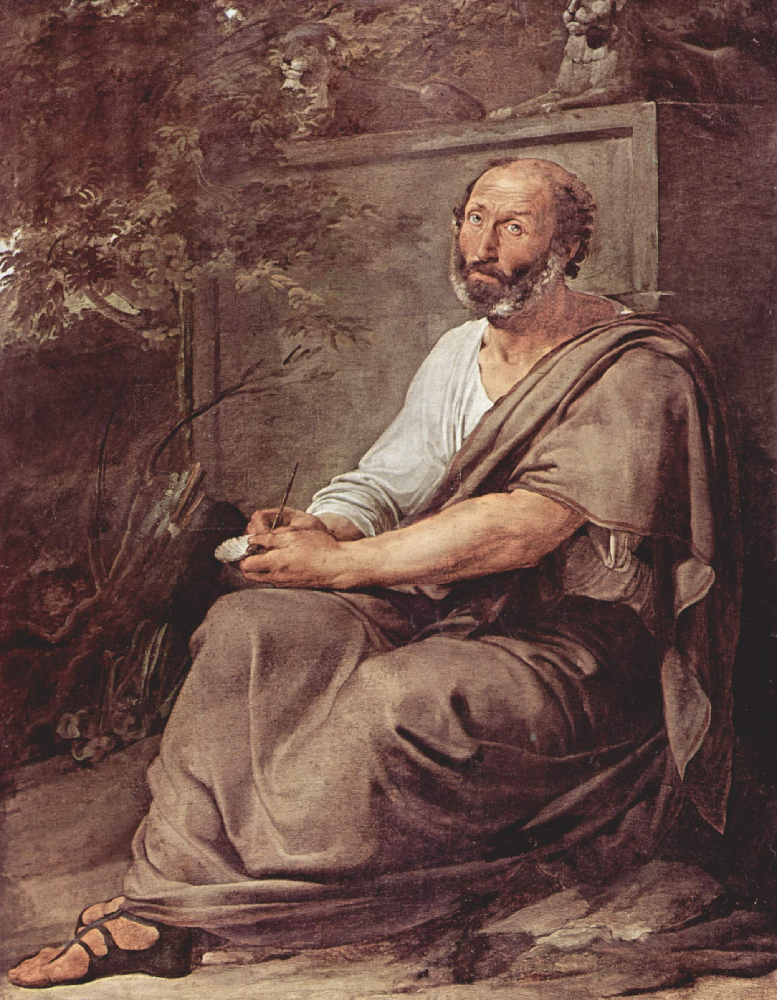

|
 Aristotle" by Francesco Hayez (1791–1882) Итак, из всего сказанного следует, что имя [мудрости] необходимо отнести к одной и той же науке: это должна быть наука, исследующая первые начала и причины: ведь и благо, и «то, ради чего» есть один из видов причин. А что это не искусство творения, объяснили уже первые философы. Ибо и теперь и прежде удивление побуждает людей философствовать, причем вначале они удивлялись тому, что непосредственно вызывало недоумение, а затем, мало-помалу продвигаясь таким образом далее, опи задавались вопросом о более значительном, например о смене положения Луны, Солнца и звезд, а также о происхождении Вселенной. Но недоумевающий и удивляющийся считает себя незнающим (поэтому и тот, кто любит мифы, есть в некотором смысле философ, ибо миф создается па основе удивительного). Если, таким образом, начали философствовать, чтобы избавиться от незиания, то, очевидно, к знанию стали стремиться ради понимания, а не ради какой-нибудь пользы. Сам ход вещей подтверждает это; а именно: когда оказалось в наличии почти все необходимое, равно как и то, что облегчает жизнь и доставляет удовольствие, тогда стали искать такого рода разумение. Ясно поэтому, что мы не ищем его ни для какой другой надобности. И так же как свободным пазываем того человека, который живет ради самого себя, а не для другого, точно так же и эта наука единственно свободная, ибо она одна существует ради самой себя. A.A.
|